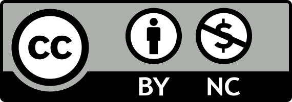

Igor Zakhlebin
Builder, computer scientist, founder of Huurrek
I am currently working on Huurrek, a startup providing sustainable cloud services based in the Netherlands 🇳🇱.
My previous experience includes quantitative finance, where I developed and utilized data-intensive systems. Before transitioning to the industry, I had been working on a Ph.D. degree at Northwestern University in computer science and communication, where I studied collective human behavior through analysis of diverse large datasets using custom-built computational tools.
Mar ’24: Our startup is now public. 🎉
Sept ’21: Our paper on social aspects of online dissemination of research is published in Proceedings of National Academy of Sciences (PNAS).
Gender inequities in the online dissemination of scholars’ work
PNAS 2021 • pdf cite
@article{vasarhelyi_gender_2021, title = {Gender inequities in the online dissemination of scholars’ work}, volume = {118}, issn = {0027-8424, 1091-6490}, url = {https://pnas.org/doi/full/10.1073/pnas.2102945118}, doi = {10.1073/pnas.2102945118}, number = {39}, journal = {Proceedings of the National Academy of Sciences}, author = {Vásárhelyi, Orsolya and Zakhlebin, Igor and Milojević, Staša and Horvát, Emőke-Ágnes}, month = sep, year = {2021}, }
Diffusion of scientific articles across online platforms
ICWSM 2020 • pdf cite
@inproceedings{Zakhlebin_Horvat_2020, title={Diffusion of scientific articles across online platforms}, booktitle={Proceedings of ICWSM}, author={Zakhlebin, Igor and Horvat, Emoke-Agnes}, year={2020} }
Investor retention in equity crowdfunding
WebSci 2019 • pdf cite
@inproceedings{Zakhlebin_Horvat_2019, place={Boston, Massachusetts, USA}, title={Investor retention in equity crowdfunding}, ISBN={978-1-4503-6202-3}, url={http://dl.acm.org/citation.cfm?doid=3292522.3326037}, DOI={10.1145/3292522.3326037}, booktitle={Proceedings of the 10th ACM Conference on Web Science - WebSci ’19}, publisher={ACM Press}, author={Zakhlebin, Igor and Horvat, Emoke-Agnes}, year={2019}, pages={343–351}}
Junet: a Julia package for network research
ICWSM 2017 • pdf code video cite
@inproceedings{zakhlebin2017junet, address = {Montreal, Canada}, title = {Junet: {{A Julia}} Package for Network Research}, booktitle = {Proceedings of the {{Eleventh International AAAI Conference}} on {{Web}} and {{Social Media}} ({{ICWSM}} 2017)}, publisher = {{AAAI}}, author = {Zakhlebin, Igor}, month = may, year = {2017}, pages = {731--732} }
ICA’20 • Washington, DC
NICO’19 • Evanston, IL
WebSci’19 • Boston, MA
JuliaCon’17 • Berkeley, CA
© 2024 Igor Zakhlebin 